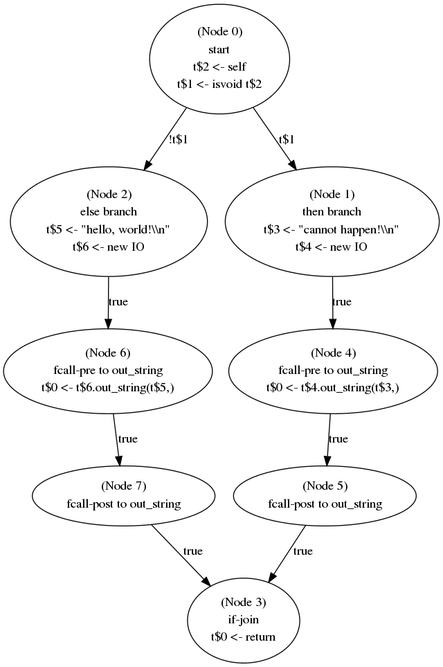

Next: Acknowledgements
Up: The Cool Reference Manual1
Previous: Operational Rules
Contents
Cool Assembly Language
Cool Assembly Language is a simplified RISC-style assembly language that
is reminiscient of MIPS Assembly Language crossed with
x86 Assembly
Language. It also features typing aspects that may remind one of
Java Bytecode.
A Cool Assembly Language program is a list of instructions.
Each instruction may be preceeded by any number of labels. Comments
follow the standard Cool conventions. In addition, a semicolon ;
functions like a double dash -- in that it marks the rest of that
line as a comment. The Cool CPU is a load-store architecture with
eight
general purpose registers
and three special-purpose registers. For simplicity, a machine word
can hold either a 32-bit integer value or an entire raw string; regardless, all
machine words have size one.
This document assumes that you already have some familiarity with assembly
language, registers, and how CPUs operate. We first present a formal
grammar and then explain the semantics. Only terms in typewriter
font are part of the formal grammar. Text after — is a comment.
We use italics for non-terminals.
register ::= r0 — general purpose register #0, often
used as the accumulator
register ::= r1 — general purpose register #1
register ::= r2
register ::= r3
register ::= r4
register ::= r5
register ::= r6
register ::= r7
register ::= sp — stack pointer register
register ::= fp — frame pointer register
register ::= ra — return address register
instruction ::= li register <- integer — load immediate
instruction ::= mov register <- register — register-to-register copy
instruction ::= add register <- register register
instruction ::= sub register <- register register
instruction ::= mul register <- register register
instruction ::= div register <- register register
instruction ::= jmp label — unconditional branch
instruction ::= bz register label — branch if equal to zero
instruction ::= bnz register label — branch if not zero
instruction ::= beq register register label — branch if equal
instruction ::= blt register register label — branch if less than
instruction ::= ble register register label — branch if less than or equal to
instruction ::= call label — direct function call
instruction ::= call register — register-indirect function call
instruction ::= return — function return
instruction ::= push register — push a value on the stack
instruction ::= pop register — push a value off the stack
instruction ::= ld register <- register [ integer ] — load a value from memory
instruction ::= st register [ integer ] <- register — store a value into memory
instruction ::= la register <- label
— load an address into a register
instruction ::= alloc register register — allocate memory
instruction ::= constant integer — lay out a compile-time constant in memory
instruction ::= constant raw_string — lay out a compile-time constant in memory
instruction ::= constant label — lay out a compile-time constant in memory
instruction ::= syscall name — request a service from the run-time system
instruction ::= debug register — debugging support: print register value
instruction ::= trace — toggle tracing
That's it, and the last two do not really count. We next describe the
interpretation of these instructions in more detail.
- Note that there are only eight general purpose registers available,
as with the x86 instruction set. This is a departure from general RISC,
but it will give you more of a feel for the real world. Eight is
entirely sufficient for a stack-machine style of code generation --
the reference compiler only uses four of them. However, for advanced
optimizations such as register allocation, eight is quite small.
- li r1 <- some_int overwrites r1 with a the
value some_int
- Note that in Cool Assembly Language, the arrows <- are
required. They remind you that the destination is always on the left
and the operands are always on the right.
- bz r1 label jumps to label if the value
of r1 is zero. If not, control passes to the instruction
immediately following this one.
- beq r1 r2 label jumps to label if the registers
r1 and r2 hold the same value.
- ble r1 r2 label jumps to label if the value
of r1 is less than or equal to the value of r2. For
integers this is standard. If r1 and r2 hold raw strings,
those strings are compared lexicographically.
- call label stores the value of the next instruction (i.e.,
the value of the current program counter + 1) in the ra register
and then jumps to label.
- call register stores the value of the next
instruction (i.e., the value of the current program counter + 1) in the
ra register and then jumps to address stored in register.
- return jumps to the address stored in the ra
register.
- Like the x86, the Cool CPU has explicit support for a stack. The
stack pointer starts at a very high value and grows down, toward
smaller numbers, as values are pushed on it. push r1 takes the
value of r1 and stores it at the address given by
the stack pointer sp and then decrements sp. pop
r1 increments sp and then loads the value from the address
given by the stack pointer and copies that value into r1.
- ld r1 <- r2 [ offset ] computes an address by
adding offset to the value stored in r2. The contents
of that address are loaded and written to r1.
- st r1 [ offset ] <- r2 computes an address by
adding offset to the value stored in r1. The contents
of r2 are stored into that address in memory.
- la r1 label stores the address associated with
label into r1.
- alloc r1 r2 allocates new contiguous memory and stores
a pointer to it in r1. The number of words to be allocated is
given in r2. For example, if r2 = 5 and alloc r1
r2 assigns 100 into r1, then 100 through
104 are now valid memory addresses.
- constant whatever lays out whatever in program
memory before execution begins.
The system calls available are:
- syscall IO.in_string reads a raw string from the user,
allocates one word of memory, stores the raw string value in that memory
word, and then stores the address of that memory word in r1.
Note that this yields a raw string value and not a Cool String object --
you'll have to do a bit more work to package it up into a full-fledged
Cool String object.
- syscall IO.in_int reads an integer from the user and
stores that integer value in r1. Note that this yields a raw
integer value and not a Cool Int object.
- syscall IO.out_int reads the value in r1 and
displays it as an integer to the user. Note that r1 should
be a raw integer and not an entire large Cool Int object.
- syscall IO.out_string reads the value in r1,
which should be an address that points to a machine word containing a
raw string. That raw string value is read from memory and displayed to
the user. Note that r1 should be a pointer to a raw string, and
not a large Cool String object.
- syscall String.length reads the value in r1,
which should be an address that points to a machine word containing a
raw string. The length of that string value is computed and stored in
r1.
- syscall String.concat reads the values in r1
and r2, both of which should be addresses that point to machine
words that contain raw strings. A machine word for a new string is
allocated in memory. That new string contains the r1-string concatenated
with the r2-string. The register r1 is overwritten so that
it contains a pointer to the newly-created raw string.
- syscall String.substr reads the value in r0,
which should be an address that points to a machine word containing
a raw string, as well as r1 and r2, which are both raw
integer values.
- If r1<0, r2<0, or r1+r2> the length of the
raw string, the system call stores 0 in r1.
- Otherwise, a word is allocated in memory to hold a new raw string.
That new raw string holds the substring specified by the three arguments.
The address of that new raw string is stored in r1.
- syscall exit terminates execution of the Cool Assembly
Language program.
That system calls correspond directly to internal predefined methods on
Cool Int and String objects. The key difference is that the system calls
work on raw values (i.e., machine-level ints and strings) and not on Cool
Objects.
Cool CPU Simulator
The normal Cool compiler executable (e.g., cool.exe) also serves
as a Cool CPU Simulator that executes Cool Assembly Language programs. Just
pass file.cl-asm as an argument.
The simulator performs the following actions:
- Load the .cl-asm program into memory starting at address
1000. That is, if the first instruction in file.cl-asm is
mov r1, r2, then memory location 1000 will hold the instruction
mov r1, r2. If the second instruction in file.cl-asm
is constant 55, then memory location 1001 will hold the integer
55.
- Set sp and fp to 2,000,000,000. Remember, the
stack starts at high addresses and grows down.
- Search file.cl-asm for a label named start.
The program counter is set to the address corresponding to that label.
For example, if start: occurs just before the third instruction
in file.cl-asm, then the program counter starts at 1002.
- Fetch the instruction pointed to by the program counter and
execute it. Unless the instruction specifies otherwise, the program
counter is incremented by one and the process repeats.
- When memory is allocated (e.g., by the alloc instruction),
addresses starting from at least 20,000 are used.
- If more than 1000 call instructions are executed before any
return instructions are executed (i.e., if there are more than
1000 calls on the stack), the simulator terminates and prints a stack
overflow error.
The constant values listed above (1000; 20,000; 2,000,000,000) should not
be counted on by your program, but are listed here to help with debugging.
Addresses near 1000 hold program instructions or compile-time data (i.e.,
the code segment), addresses near 20,000 hold the heap, and addresses near
two billion are on the stack.
Debugging
Debugging assembly language programs is notoriously difficult! While
writing your code generator, you will spend quite a bit of time running
generated Cool Assembly programs through the Cool CPU Simulator to see if
they work. Often they will not. The Cool CPU Simulator has been designed
with a large number of features to aid debugging. Basically none of these
features are present in traditional assemblers, so you actually have a
wealth of debugging support, but it will still be difficult.
- The simulator tracks a notion of time — the first instruction
is executed at time one, the second at time two, etc. More importantly:
- The simulator tracks, for each register and memory value, the
last time it was written to and the instruction that wrote to it. This can
be invaluable for tracking down memory corruption errors (e.g., finding
who is scribbling over memory) or otherwise determining why r1
holds an integer when you were sure it was supposed to hold a string.
- If you try to read from a register or a memory address that has
never been written to, the simulator will catch it and abort the program,
rather than continuing with a garbage value.
- You can use the debug r1 opcode to print out the current
value of any register, as well as its last modification information.
- The simulator keeps track of integers, strings, labels and code
segment addresses separately "under the hood". Thus if you
execute la r5 my_label and then inspect the value of
r5, it will print as label my_label rather than
1056 or whatever that address happens to be. This can be quite
handy for tracking down problems related to virtual function tables.
Perhaps more importantly:
- The simulator uses this type information when simulating
instructions, and stops early if you provide the wrong type of argument.
For example, in st r1 [ 0 ] <- r2, if r1 is actually
a string or a pointer to the code segment, the simulator will raise an
error rather than silently corrupting your program. If r1 is a
label or integer address, everything works fine. (If the string example
confuses you, remember that in Cool Assembly Language a raw string is a
one-word value that fits in a register, not a C-style pointer to a
buffer.)
- The simulator keeps a best effort stack trace. If you use the
call and return instructions, the simulator will keep
track of which functions were called, and from where, and print that
back trace out if there is an error.
- When dynamically allocating memory, the simulator actually allocates
more space than is needed and leaves the remainder empty. For example, if
you make two allocations of five words each, you may get back the
addresses 21,000 and 21,010. The range 21,005-21,009 remains unused, and
if you attempt to read from it, the simulator will abort. This can help
to prevent walking off the end of a buffer.
- If you attempt to divide by zero or dereference a null pointer, the
simulator will catch it.
- Finally, if you use the --trace-eval option to
cool.exe or execute the trace instruction (which
toggles the state of tracing), the simulator will print copious debugging
information before every time step, including the contents of all
registers and the current instruction.
Control Flow Graphs
The Cool reference compiler also includes options to produce control
flow graphic visualizations in the style of the dotty tool
from the Graphviz
toolkit.
Passing the --cfg option (with, for example, --opt --asm)
produces method.dot, which can then be inspected via a number of
tools. For example, this program:
class Main {
main():Object {
if (isvoid self) then
(new IO).out_string("cannot happen!\n")
else
(new IO).out_string("hello, world!\n")
fi
};
};
Might produce this control-flow graph:

While you do not have to match the reference compiler exactly, inspecting
its control-flow graphs can help you debug your own code to create
control-flow graphs.
Performance Model
As discussed above, the Cool reference compiler also includes a reference
machine simulator to interpret Cool Assembly Language instructions. This
simulator can be invoked directly by passing a .cl-asm file to
cool.exe:
cool$ cat hello-world.cl
class Main {
main():Object {
(new IO).out_string("hello, world!\n")
};
};
cool$ ./cool --asm hello-world.cl
cool$ ./cool hello-world.cl-asm
hello, world!
The simulator can also give detailed performance information:
cool$ ./cool --profile hello-world.cl-asm
hello, world!
PROFILE: instructions = 107 @ 1 => 107
PROFILE: pushes and pops = 29 @ 1 => 29
PROFILE: cache hits = 22 @ 0 => 0
PROFILE: cache misses = 570 @ 100 => 57000
PROFILE: branch predictions = 0 @ 0 => 0
PROFILE: branch mispredictions = 11 @ 20 => 220
PROFILE: multiplications = 0 @ 10 => 0
PROFILE: divisions = 0 @ 40 => 0
PROFILE: system calls = 2 @ 1000 => 2000
CYCLES: 59356
The execution time of a Cool Assembly Language program is measured in
simulated instruction
cycles. In general, each assembly instruction takes one cycle. Some
instructions, such as system calls or memory operation, can cost many more
cycles. The total cycle cost of a program is the sum of all of its
component cycle costs.
In modern architectures, memory hierarchy
effects (e.g., caching)
and branch
prediction are dominant factors in the execution speed of a program.
To give you a flavor for what real-world code optimization is like,
the Cool Simulator also simulates a cache and a branch predictor.
The Cool Simulator features a 64-word
least-recently-used
fully
associative combined
instruction and data cache. It also uses a static
backward
= taken, forward = not taken branch prediction scheme.
We now discuss each of the performance components in turn:
- instructions. Each Cool Assembly Language instruction executed
costs at least one cycle. This represents the time taken to fetch and
decode the instruction, as well as to shepherd it through the pipeline.
Instructions such as li, mov and add take one
cycle.
- pushes and pops. Such push and pop
involve both a load/store and also an add/sub, each costs an additional
cycle (for a total of two). (push and pop can also incur
cache miss penalties; see below.)
- cache hits & misses. In modern computers, the CPU executes much
faster than main memory: hundreds of "normal" instructions can be executed
in the time it takes to fetch one value from memory. To mitigate this
problem, a small number of values are placed in expensive, high-speed
memory near the CPU. This small, fast memory stores recently-used values
and is known as a cache. The Cool Simulator features a 64-word
fully-associated cache: the values associated with 64 addresses can be
accessed rapidly. If a memory read or write accesses an address that is in
the cache, the instruction completes immediately with no extra cost.
If a memory read or write accesses an address that is not in the
cache, it costs 100 cycles while that value is read in from main memory.
If there is no room in the cache to hold that new address's value, the
address that has been touched (read or written) least recently is evicted
and the new address/value is put in its place.
Typical reasons for
cache misses include compulsory, capacity and conflict.
Note that the cache and the cache miss penalty apply to every
access to memory. This includes:
- Fetching the next instruction based on the program counter.
- push, pop
- ld, st
- IO.in_string
- IO.out_string
- String.length
- String.concat (three times)
- String.substr (two times)
- branch prediction & misprediction. In a modern
pipelined CPU,
the next instruction is fetched before the current instruction has
completed. This means that the CPU needs to know the address of the next
instruction as early as possible. For a conditional branch, that may be
difficult: the CPU may have to wait until the comparison is complete to
determine if the next instruction will be at pc+1 or
label. Modern CPUs optimistically "guess" or "predict" that a
branch will go one way or the other and then rollback instructions if they
are wrong. A correctly-predicted branch costs nothing; a mispredicted
branch costs 20 cycles. The following instructions are related to this
cost:
- jmp — always correctly predicted
- call label — always correctly predicted
- bz bnz beq blt ble — The Cool CPU Simulator uses the
following heuristic: if the address label is less than the
address of the current PC (i.e., if label's definition occurs
before the current PC in the assembly code), guess taken.
Otherwise, guess not taken. This heuristic works well in practice:
imagine a for loop that executes 10 times: the heuristic will be
right 90% of the time.
- call reg — always mispredicted
- return — always mispredicted
- multiplication & division. Integer multiplication and division
take longer on most architectures than addition and subtraction. In the
Cool Simulator, mul costs an extra 10 cycles and div
costs an extra 40.
- system calls. A system call involves
trapping to the operating system, switching CPU protection contexts,
putting the old process on the scheduling queue, handling the operation,
rescheduling the new process, and switching CPU protection contexts again.
System calls take forever. In the Cool Simulator, each syscall
instruction takes 1000 extra cycles.
This cost model involves realistic components but potentially unrealistic
values (e.g., a modern CPU would have a much larger non-associative cache,
and also a much larger cache miss cost). If you're interested in that sort
of performance modeling, take a graduate class in computer architecture.
You should know that this CPU performance model is one of the most
realistic that I've seen for a compiler optimization project in terms of
the issues that it forces you to address.
The reference compiler includes a simple reference peephole
optimizer, as well as a few optimizations backed by dataflow
analyses (liveness, reaching definitions, constant folding)
and register
allocation
enabled via the --opt flag. You can use it to get an idea for
how to get started (but note that we are evil and strip all comments from
the optimized output).
yuki:~/src/cool$ ./cool --opt --asm hello-world.cl
yuki:~/src/cool$ ./cool --profile hello-world.cl-asm
hello, world!
PROFILE: instructions = 79 @ 1 => 79
PROFILE: pushes and pops = 23 @ 1 => 23
PROFILE: cache hits = 15 @ 0 => 0
PROFILE: cache misses = 513 @ 100 => 51300
PROFILE: branch predictions = 2 @ 0 => 0
PROFILE: branch mispredictions = 7 @ 20 => 140
PROFILE: multiplications = 0 @ 10 => 0
PROFILE: divisions = 0 @ 40 => 0
PROFILE: system calls = 2 @ 1000 => 2000
CYCLES: 53542
For the hello-world program, this optimizer reduces the cycle cost
from 59356 to 53453 — a 10% improvement.
If you are writing an optimizer, you will want to do
at least as well as the reference, averaged over many input programs.
Notably, you'll probably want to implement much more than the
required dead code elimination optimization.